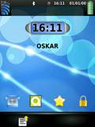
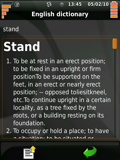
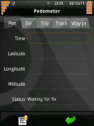

packages
Themes
Faenqo theme
Faenqo is nice theme for your phone created by Cyberesprit
Asthromod theme

Asthromod is another nice theme created by Thomas HOCEDEZ
Finximod theme
Finximod is yet another nice theme created by Joif
Multimedia
MP3 codecs

MP3 codecs for media player and ringtones. You need to reboot after installing this package.
Dictionaries
Qgcide
Offline English explanatory dictionary with more then 130000 words.
GPS
QtPedometer
GPS based pedometer